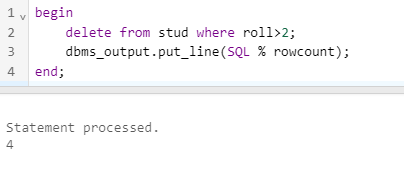
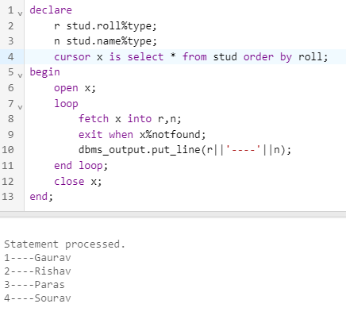
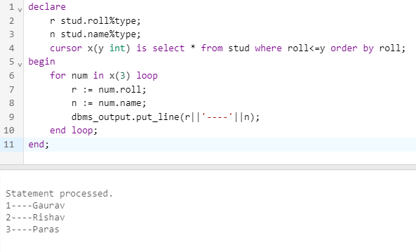

Cursors
Cursors are used to process individual rows returned by a SELECT statement. They allow PL/SQL code to perform operations on a set of rows returned by a query.
There are two types of cursors in PL/SQL:
- Implicit cursors : They are created and managed by the PL/SQL engine. They are automatically created for every SQL statement that is executed within a PL/SQL block. Implicit cursors are useful when the result set is small.
Example :

- Explicit cursors : They are created and managed by the developer. Explicit cursors are used when the result set is large or when more control is needed over the processing of the result set.
Explicit Cursor processing involves the following steps:
- Declare the cursor
- Open the cursor
- Fetch the rows from the cursor
- Process the fetched rows
- Close the cursor
Syntax :
Declare
cursor cur_name is select query;
Begin
open cur_name;
fetch cur_name into variable;
close cur_name;
Example :

- Parameterized Cursors : These cursors allow passing arguments to the SELECT statement, which enables more dynamic queries. The parameters can be used to filter the data or to modify the behavior of the cursor.
Syntax :
Declare
cursor cur_name(vairable datatype) is select query;
Begin
open cur_name;
fetch cur_name into variable;
close cur_name;
Example :

Cursor Attributes in PL/SQL
In PL/SQL, cursor attributes are used to provide information about the current state of the cursor. The following are the different cursor attributes:
- %found: This attribute returns TRUE if a SELECT statement returned at least one row.
- %notfound: This attribute returns TRUE if a SELECT statement returned no rows.
- %rowcount: This attribute returns the number of rows fetched so far.
- %isopen: This attribute returns TRUE if the cursor is open and FALSE if the cursor is closed.
- %rowtype: This attribute used to declare a record variable that has the same structure as a cursor's query result.